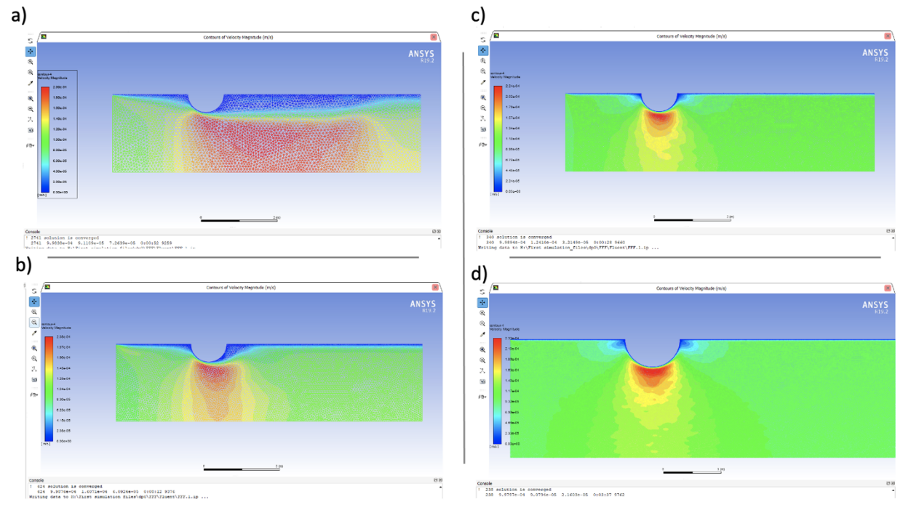

During my junior year, I had the pleasure of taking fluid mechanics with professor Mostafa Mobli of the aerospace engineering department at USC. Despite the innate difficulty of this class, I found it to be one of the most enjoyable of my whole college experience. As the final project of this course, students were tasked with analyzing pressure drop within a pipe using Ansys Fluent.
Simulations were to include 2 different types of fluid, 2 different velocities (turbulent/laminar), 2 different pipe diameters, and 2 different shaped obstructions. Students would then determine which flow had model had preformed most successfully.
Optimal model: 2m circular obstruction with laminar octane flow.
For my project I utilized pipe diameters of 1 and 2 meters, circular and triangular obstructions, turbulent and laminar velocities for each fluid of water and octane. After 40+ hours of work, as it was my first time utilizing Ansys software, I completed the report and determined the most optimal model was the 2m circular obstruction with laminar octane flow. Below is an image of some of the Ansys simulations.
| Skills Demonstrated | Project Artifacts |
|---|---|
| Ansys Fluent | Fluids Report |

Analysis of pressure drop is key concept in many industries such as healthcare and oil manufacturing.
Healthcare professionals require pressure drop to fully understand how arteries pump blood in the human body. Research of pressure drop in this field can help to diagnose dangerous diseases that involve blood pressure like atherosclerosis.
It is important for the oil and gas industry to properly understand how the pressure acts in these pipes to prevent leaks. In pipe systems with multiple branches, pressure drop can be used as a method to determine the efficiency of the system.